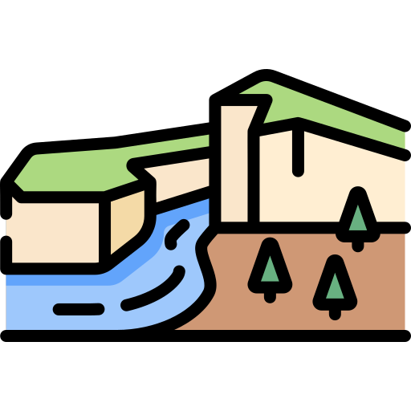
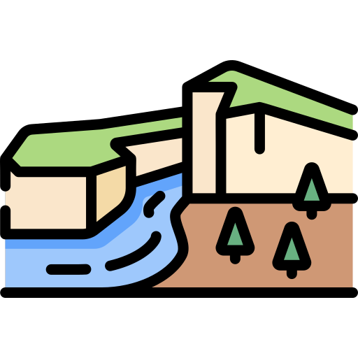

I'm Richard,
and I would like to become a web developer.

and I would like to become a web developer.
I am a young professional living in Cambridge, with a background in mathematical and scientific research studies and work experience in fast paced logistics and customer services. My most recent role in operations has given me an extensive insight into the importance of collaborative working, as well as in depth scheduling and administrative skills. Colleagues would describe me as a highly motivated and personable individual who enjoys working in a team environment and learning from those around him. In addition, I embrace the opportunity to take ownership of projects with best practice and an open-mind.
Puzzles are a great pass time. The act of being excited about finding a solution and fine tuning a process for maximum efficiency means I look to create puzzles out of my day to day activities. This is how I push myself to succeed.
I enjoy to paint, play piano and create designs. This naturally flows into the workplace when completing a project with lack of resource and a tight deadline.
I'm you like what you have seen please feel free to send me an email or use the link below to go to my LinkedIn
CONTACT ME